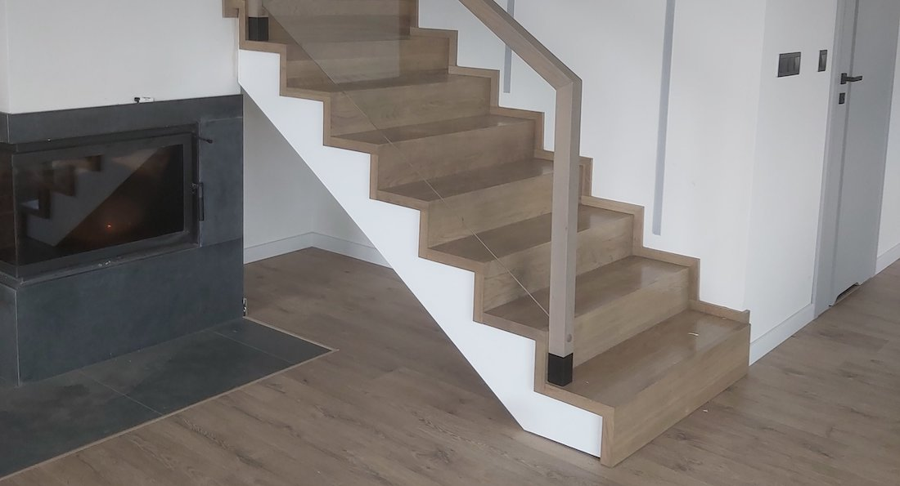

Schody dywanowe

Schody dywanowe - realizacje
Zapraszamy do zapoznania się z realizacjami tego typu schodów w naszym wykonaniu jak i z samą balustradą, którą rownież montujemy. Na zdjęciach można obejrzeć zastosowanie takich konstrukcji oraz poznać więcej szczegółów.
Schody dywanowe pasują do nowoczesnych stylizacji. Grubość trepa jest nieco większa od standardowch, dzięki temu całość sprawia wrażenie wiszącej w przestrzeni bryły.